The Voyages Extraordinaires
No books match that search.

Five Weeks in a Balloon
Dr. Samuel Fergusson, his friend Dick Kennedy, and faithful Joe embark on an aerial journey across Africa. Aboard the balloon Victoria, they face unknown territories, natural dangers, and unexpected encounters as they advance westward.
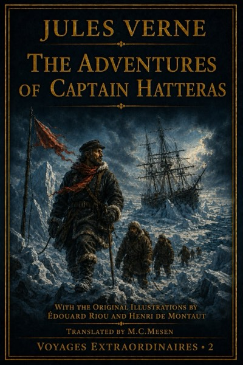
The Adventures of Captain Hatteras
Captain Hatteras leads a British expedition toward the North Pole, driven by an unwavering will. Amidst ice, isolation, and growing tensions, his men must endure the dangers of a still-unknown region.
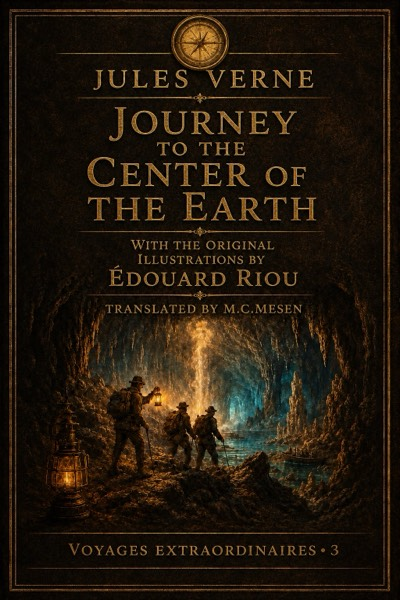
Journey to the Center of the Earth
Professor Lidenbrock deciphers a manuscript revealing a route to the planet's interior. Together with Axel and guide Hans, he descends through an Icelandic volcano into a world where every discovery defies reason.
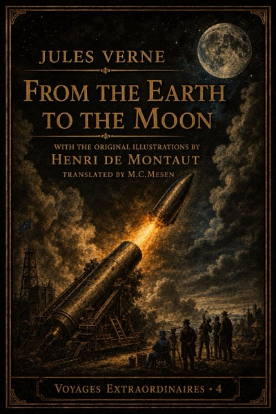
From the Earth to the Moon
The Gun Club of Baltimore conceives a cannon capable of sending a projectile to the Moon. Barbicane, Nicholl, and the daring Michel Ardan turn the scientific challenge into an endeavor that captivates the entire world.
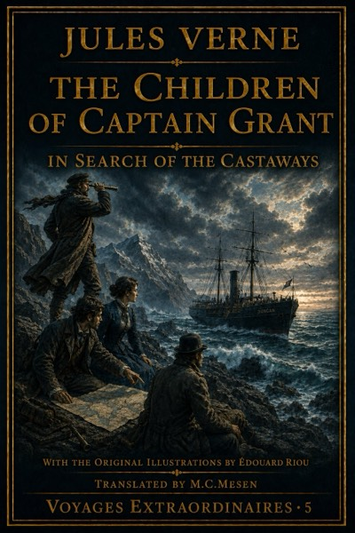
The Children of Captain Grant
A message found inside a bottle drives Lord Glenarvan and Captain Grant's children to travel along the 37th parallel. Their search crosses continents, oceans, and cultures following incomplete clues.
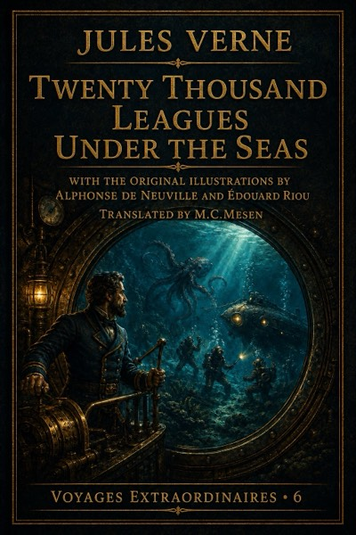
Twenty Thousand Leagues Under the Seas
Professor Aronnax, Conseil, and Ned Land are welcomed aboard the Nautilus, an extraordinary submarine commanded by Captain Nemo. Beneath the oceans they discover natural wonders and the secrets of a man withdrawn from the world.
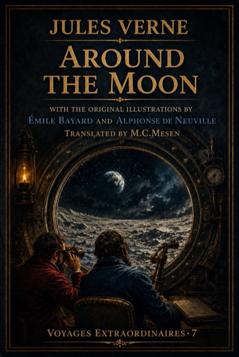
Around the Moon
Barbicane, Nicholl, and Michel Ardan travel inside the projectile launched from Florida. As they approach the Moon, every calculation, observation, and mishap tests their mission, turning their journey into a cosmic adventure.
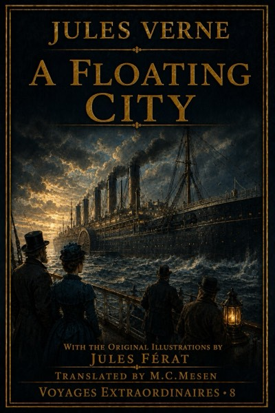
A Floating City
The gigantic Great Eastern crosses the Atlantic as a true floating city. Amid the ship's daily life, storms, and personal rivalries, the narrator accompanies travelers marked by a shared past.

Three Englishmen and Three Russians in South Africa
Six scientists travel to southern Africa to precisely measure an arc of the meridian. The expedition must reconcile national rivalries, technical difficulties, dangerous wildlife, and vast unexplored regions while pursuing its ambitious goal.
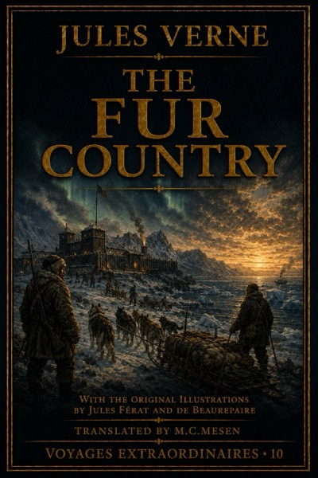
The Fur Country
Lieutenant Jasper Hobson leads a Hudson's Bay Company expedition to the far north of Canada. There they establish a remote fort, surrounded by an Arctic landscape as fascinating as it is unpredictable.
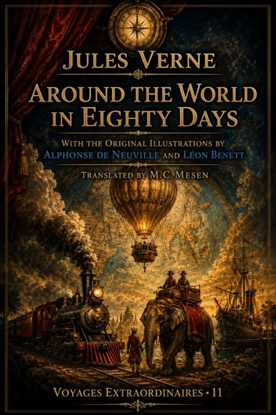
Around the World in Eighty Days
Phileas Fogg bets his fortune that he can circumnavigate the globe in eighty days. Accompanied by Passepartout and followed by Inspector Fix, he embarks on a race where every connection, delay, and encounter proves decisive.
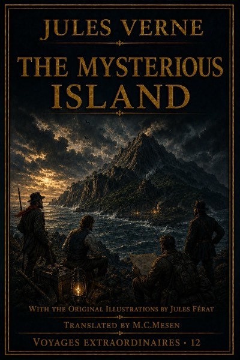
The Mysterious Island
Five fugitives escape in a balloon and land on an unknown Pacific island. With ingenuity, science, and collective labor they build a new life, while inexplicable events suggest they may not be entirely alone.
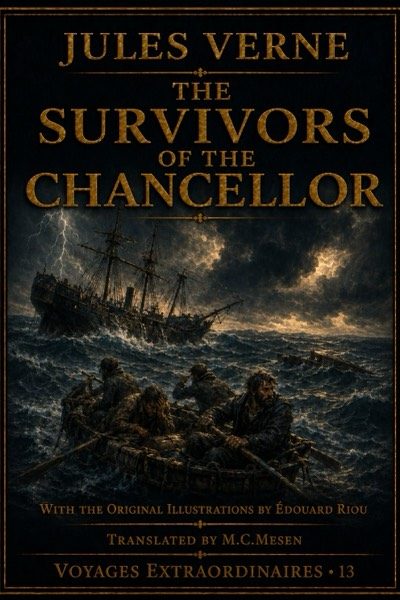
The Survivors of the Chancellor
The Chancellor sets sail from Charleston to Liverpool with passengers, crew, and a troubling cargo. Told as a ship's diary, the voyage confronts everyone with escalating dangers and decisions that test their humanity.
Michael Strogoff
The czar's courier receives an urgent mission: cross Siberia and deliver a vital message to Irkutsk. Under a secret identity, Michael Strogoff must traverse turbulent territories while protecting his duty and those he meets.
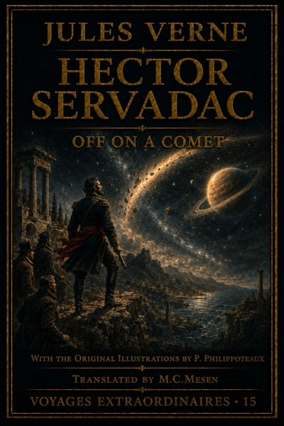
Hector Servadac
An astronomical phenomenon sweeps Captain Hector Servadac and a diverse group of survivors far from Earth. United in an altered world, they must understand their new situation and adapt to extraordinary conditions.
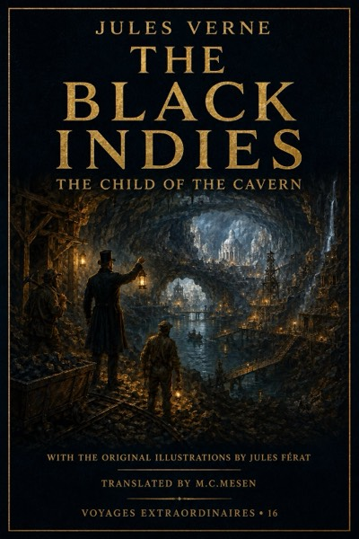
The Black Indies
Engineer James Starr returns to the abandoned Aberfoyle mines after receiving a mysterious letter. Underground he discovers a community determined to be reborn, but also troubling signs that threaten their plans.
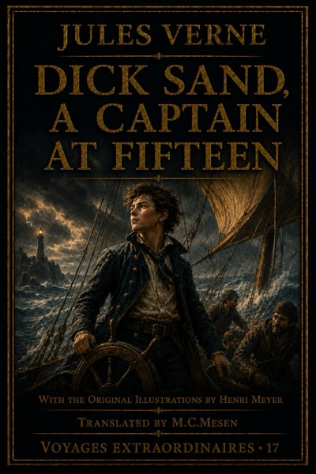
Dick Sand, a Captain at Fifteen
When a tragedy leaves the Pilgrim without command, young Dick Sand takes on unexpected responsibilities. His courage and knowledge are tested during an uncertain voyage, surrounded by vulnerable passengers and hidden dangers.
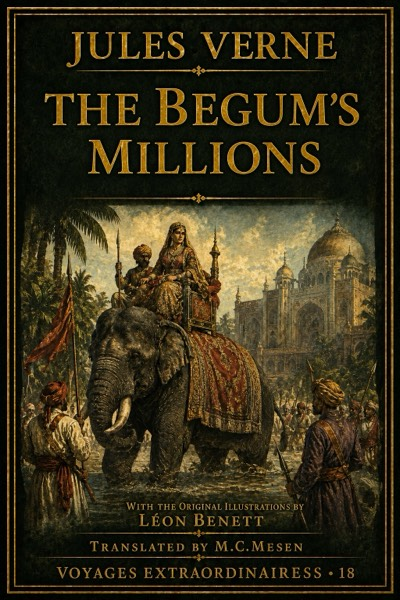
The Begum's Millions
Two heirs receive immense fortunes and build cities inspired by opposing ideals. While one seeks well-being and knowledge, the other concentrates power and technology, turning their rivalry into a growing threat.
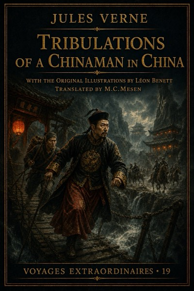
Tribulations of a Chinaman in China
Kin-Fo, a young millionaire unable to enjoy his fortune, makes an extreme decision he soon wishes to undo. Together with his servant and a peculiar philosopher, he travels across China in a whirlwind and humorous adventure.
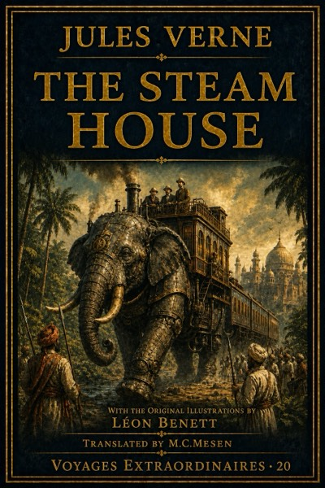
The Steam House
A group of travelers crosses India in an extraordinary steam-powered house on wheels guided by a mechanical elephant. The journey combines landscapes, history, and threats linked to an ancient rivalry.
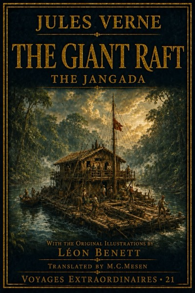
The Giant Raft
The Garral family descends the Amazon on an immense raft bound for Belém. The journey reveals the richness of the great river, while an accusation from the past threatens the family's peace and honor.
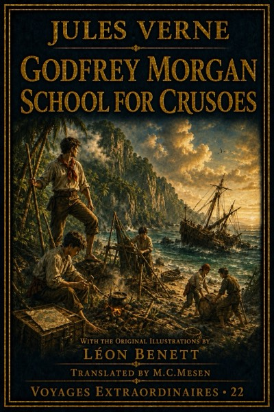
Godfrey Morgan
Godfrey Morgan longs for adventure before marrying, and his tutor sends him on a voyage that ends in shipwreck. On a deserted island he must apply everything he learned from books while nature and instinct teach him unexpected lessons.
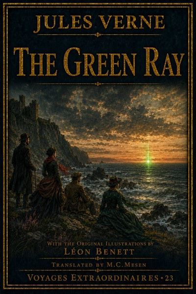
The Green Ray
Miss Campbell hopes to witness the last green ray of the setting sun, a phenomenon that according to legend reveals true love. Between Scotland and the Hebrides, her companions conspire so that the optical wonder reaches her in the most unexpected way.
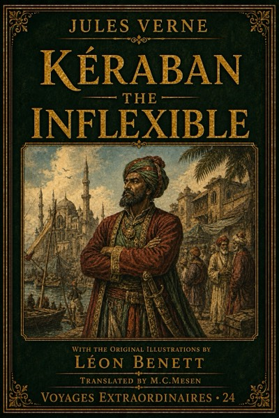
Kéraban the Inflexible
The stubborn merchant Keraban refuses to pay a new tax and decides to circumnavigate the Black Sea instead of crossing it. His obstinate journey takes him through landscapes, cultures, and dangers that will put his stubbornness to the test.
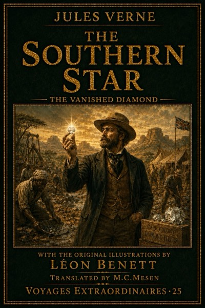
The Southern Star
Engineer Cyprien Méré discovers a fabulous diamond in the South African mines, but the stone disappears. The search for the thief among settlers, natives, and prospectors reveals hidden tensions in a land where wealth transforms everything.
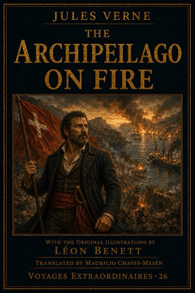
The Archipelago on Fire
In the Aegean Sea during the Greek War of Independence, the crew of a merchant ship becomes entangled in a web of betrayals and passions. Among islands lit by conflict, a woman marked by the past decides her own destiny.

Mathias Sandorf
A political plot separates Mathias Sandorf from his family and sends him to prison. After escaping, he adopts multiple identities to execute a plan of vengeance across the Mediterranean, inspired by the Count of Monte Cristo.
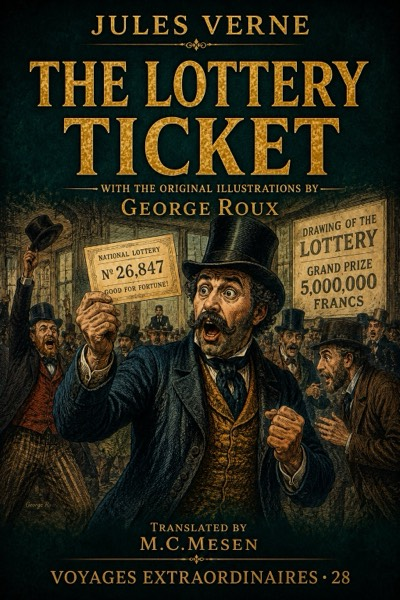
The Lottery Ticket
A lost lottery ticket sets off a story of waiting and hope in a Norwegian fjord. While a young woman awaits news of her fiancé lost at sea, the annual drawing decides the fate of several intertwined lives.
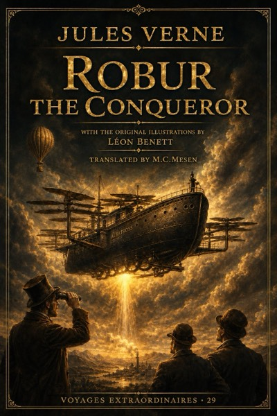
Robur the Conqueror
The enigmatic Robur bursts into the Aerial Navigation Club to demonstrate the superiority of his formidable flying machine, the Albatross. Unexpected guests accompany him on an astonishing journey around the world through the skies.
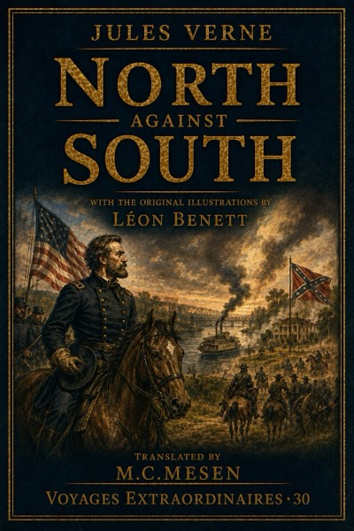
North Against South
In Florida during the Civil War, farmer James Burbank, a Unionist on Confederate soil, faces hostility from his neighbors. When his daughter is kidnapped, a conflict erupts where political loyalties mix with personal grudges.
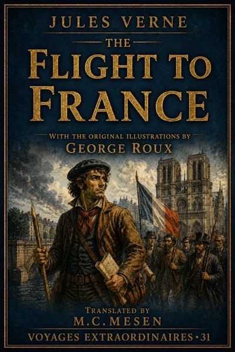
The Flight to France
A French soldier captured in Prussia manages to escape and cross enemy territory to reunite with his beloved. His clandestine journey through forests, hostile villages, and a country at war is also a voyage toward his own convictions.
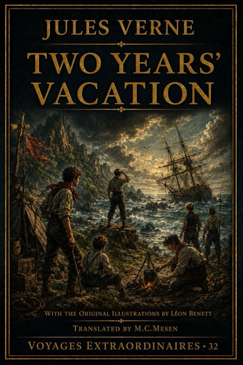
Two Years' Vacation
A group of schoolboys is set adrift in the Pacific and stranded on a deserted island. Without adults to guide them, they must organize themselves, overcome differences, and face whatever the sea brings their way.
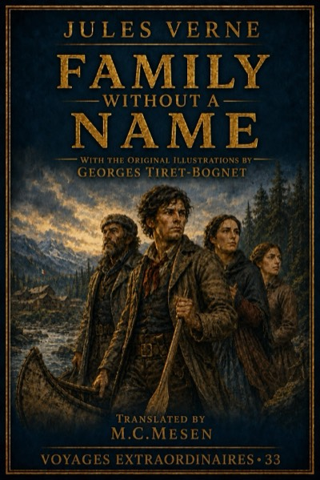
Family Without a Name
During the Patriot rebellion in French Canada, a family hides its true surname to fight for independence. Amid persecutions, divided loyalties, and a father whose identity is a secret, the children must choose their side.
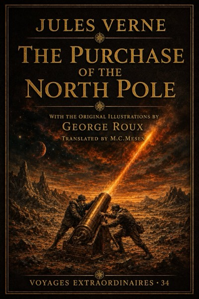
The Purchase of the North Pole
President Barbicane announces the purchase of the North Pole. Soon a purpose capable of provoking worldwide panic is revealed, as governments and scientists try to understand the consequences of another monumental Gun Club project.
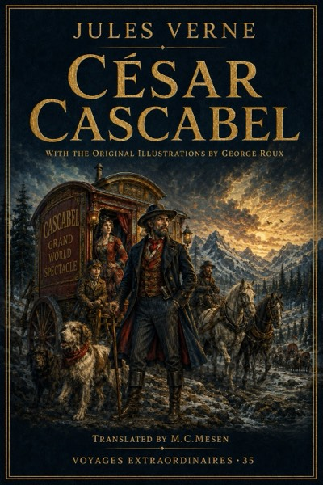
César Cascabel
The Cascabel family, French traveling performers, decide to return to Europe from California across Alaska and Siberia. Their circus caravan traverses extreme landscapes while their skills as clowns and acrobats help them overcome every obstacle.
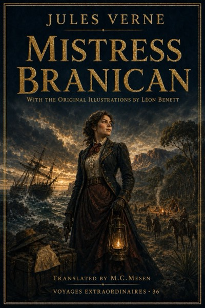
Mistress Branican
After her husband's disappearance at sea, Mistress Branican herself leads search expeditions across the oceans. Her determination leads her to discover not only her husband's fate, but also her own strength.
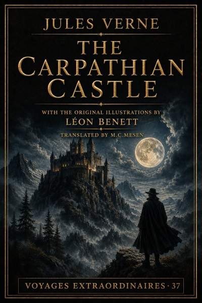
The Carpathian Castle
Strange phenomena surround an abandoned castle in Transylvania. When Count Franz de Télek arrives in the region, memories of a lost singer and the wonders of science turn the fortress into an enigma.

Claudius Bombarnac
A French reporter travels on the Great Transasiatic train from the Caspian Sea to Peking. His chronicle records eccentric passengers, fascinating landscapes, and unforeseen events that turn his report into an unparalleled railway adventure.
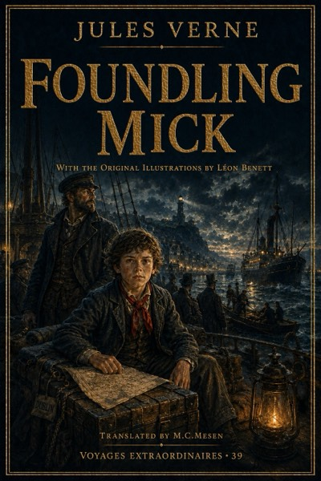
Foundling Mick
Young orphan Mick survives the streets of Dublin through his ingenuity and unwavering will. From the depths of misery, his social ascent is a moving portrait of abandoned childhood and the power to reinvent oneself.
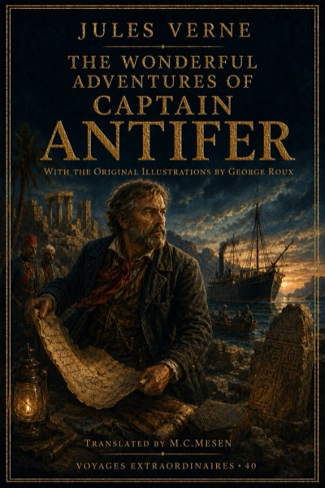
The Wonderful Adventures of Captain Antifer
Captain Antifer inherits a geographical enigma that guides him toward a hidden treasure across different points of the planet. His obsession takes him from island to island, accompanied by a skeptical notary, on a quest that crosses three continents.
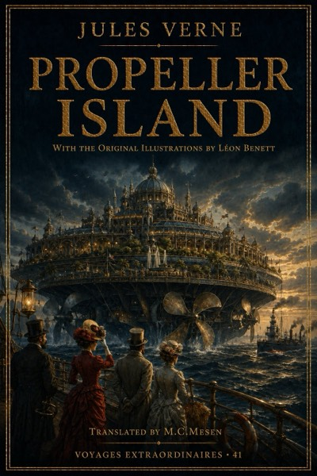
Propeller Island
An artificial island powered by engines cruises the Pacific, home to the most eccentric millionaires. When a group of French musicians lands on it, they discover a mechanical paradise that hides tensions beneath its floating luxury.
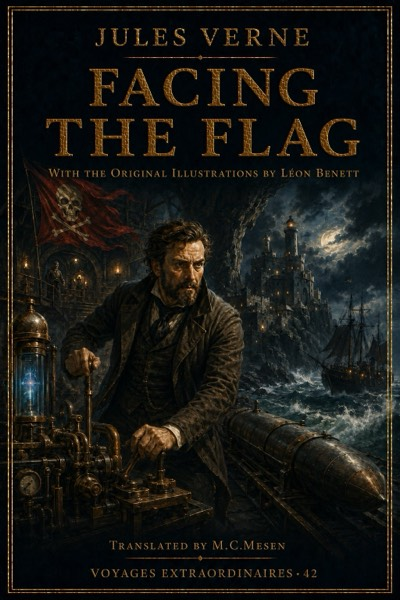
Facing the Flag
Inventor Thomas Roch creates an explosive of devastating power, but when it falls into the wrong hands, his secret threatens global security. On a fortress island where a conspiracy is brewing, an engineer must prevent the catastrophe.
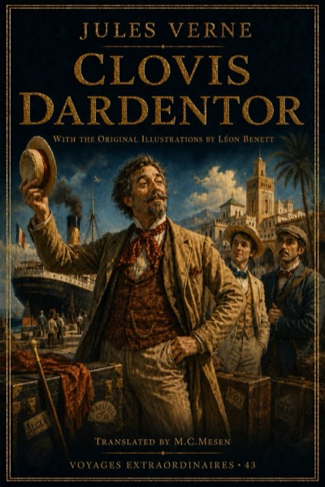
Clovis Dardentor
An eccentric philanthropist offers to fund two young men's journey in exchange for being called uncle. The Mediterranean voyage unfolds encounters, misunderstandings, and adventures where generosity and self-interest mix unpredictably.
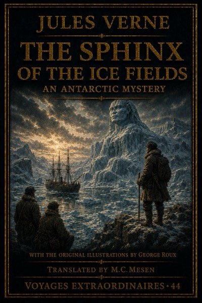
The Sphinx of the Ice Fields
American Jeorling joins a whaling expedition seeking answers about a disappearance years earlier. In the Antarctic, the ice holds a secret linking his journey to the legend of Captain Arthur Gordon Pym.
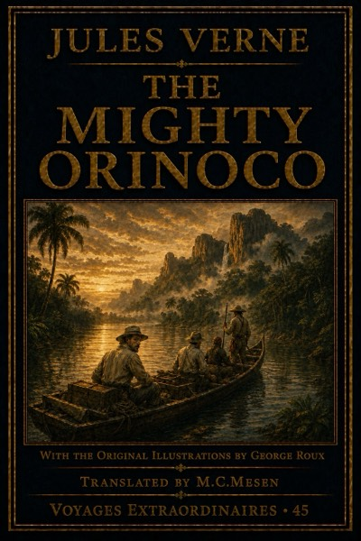
The Mighty Orinoco
Sergeant Martial and his nephew navigate up the Orinoco River on a scientific expedition that soon reveals a hidden purpose. Along the banks of the great South American river, false identities and jungle landscapes conceal a family revelation.

The Will of an Eccentric
An eccentric millionaire bequeaths his fortune to whoever completes a journey across the United States following a living game board. The participants cross the entire country in a competition where chance, strategy, and character define the winner.
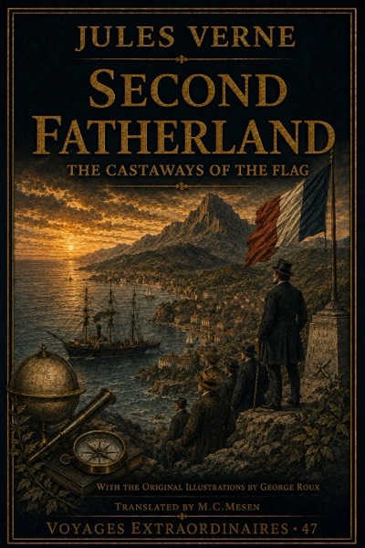
Second Fatherland
After years of abandonment, the Zermatt family returns to the island where they were shipwrecked and which they made their home. Nostalgia leads them back to their lost paradise, but new threats will test their bond with that land.
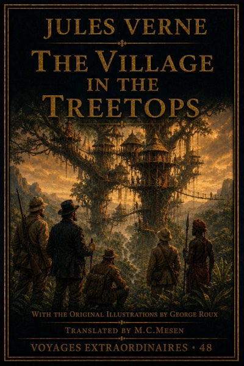
The Village in the Treetops
An engineer and a hunter venture into the African jungle and discover a community living in the treetops. Among vines, heights, and unknown customs, they must decipher whether this aerial village is a refuge or a prison.
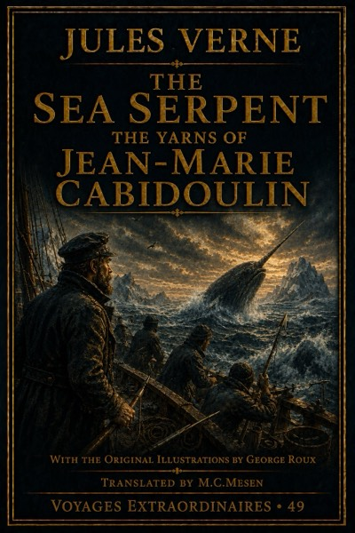
The Sea Serpent
Boatswain Cabidoulin entertains the whaling crew with stories of sea monsters, but his obsession with a giant serpent proves prophetic. On the high seas, legend and reality meet when the dreaded encounter becomes inevitable.

The Kip Brothers
Two sailor brothers are wrongly accused of murdering their captain in the Pacific islands. While serving their sentence, the proof of their innocence travels slowly across the ocean, in a story of fraternal loyalty and patience in adversity.

Travel Scholarships
A group of students from a West Indies school wins an educational trip through the Caribbean islands. What promises to be a journey of learning turns into a nightmare when the ship falls into the hands of former pirates.
A Drama in Livonia
In the Baltic region of Livonia, a banker is murdered and suspicion falls on an innocent man. The lawyer handling the case must unravel a tangle of jealousy, interests, and ethnic tensions before justice condemns the wrong man.
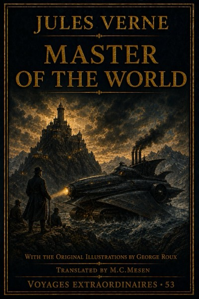
Master of the World
A vehicle capable of traveling by land, sea, and air at prodigious speeds baffles the authorities. While the inventor of the Terror keeps the United States on edge, Inspector Strock follows its trail across mountains, lakes, and skies.
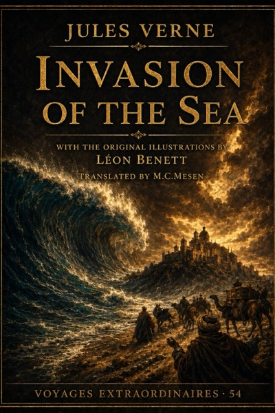
Invasion of the Sea
An engineering project aims to flood the depressions of the Algerian Sahara to create an inland sea. Engineers, soldiers, and Tuareg communities clash around a monumental work also subject to the forces of nature.